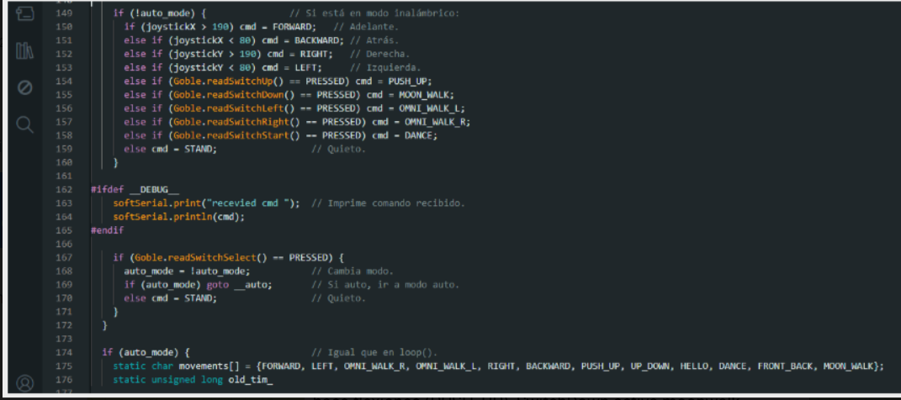

Instrucciones
En el siguiente apartado encontramos el código base para el desarrollo de nuestro robot.
Sigue los siguientes pasos para que puedas programar a la ARAÑA-TECH.
Analiza cada parte del código y su funcionamiento.
Parte N°1

Configura al robot para que pueda ser controlado de forma inalámbrica mediante Bluetooth usando la librería GoBLE, manejar saltos condicionales con setjmp.h, y opcionalmente usar un sensor ultrasónico HC-SR04 para detectar obstáculos; además, define pines específicos para calibrar los servos (CAL_TRIGGER_PIN), encender un LED indicador (LED_PIN), y establece intervalos de tiempo para cambiar movimientos en modo automático y recibir datos por serial; también incluye una opción de modo depuración para habilitar comunicación serial por software si se activa la directiva DEBUG, y define comandos para cambiar entre modo autónomo y control remoto (ACTIVATE_EXTRA y DEACTIVATE_EXTRA).
Parte N°2
Se define los comandos de movimiento que el robot MiniKame puede ejecutar, como avanzar (FORWARD), retroceder (BACKWARD), girar a la izquierda o derecha (LEFT, RIGHT), quedarse quieto (STAND), y realizar animaciones especiales como moonwalk, flexiones, saludo o baile; además, configura otros movimientos como arriba-abajo u omnidireccional; luego, crea una instancia del robot (MiniKame robot), establece que al inicio esté en modo automático (auto_mode = true), define que arranca quieto (cmd = STAND), habilita o no la caminata aleatoria (random_walk), controla si se detiene la comunicación serial (stopSerial), reserva variables para controlar tiempos de eventos y un buffer de salto condicional (jmp_buf jump_env) para gestionar saltos entre puntos del programa si se requiere.
Parte N°3
Función setup(), que se ejecuta una sola vez al iniciar el robot; primero establece la comunicación serial a 9600 baudios para enviar y recibir datos, y si está activado el modo depuración (DEBUG), inicia también la comunicación serial por software y muestra un mensaje para indicar que está en modo de prueba; si se usa el sensor ultrasónico (__HC_SR04__), configura sus pines de disparo y eco; luego inicializa el generador de números aleatorios leyendo ruido eléctrico de un pin analógico (A7), inicia el robot MiniKame (robot.init()), espera 2 segundos para que los servos tomen posición, y dentro de un bloque, calibra los servos encendiendo y apagando un LED indicador (LED_PIN) mientras el pin de calibración (CAL_TRIGGER_PIN) esté activo, apagando el LED al finalizar la calibración.
Parte N°4
Código que completa el setup() y empieza la función loop(), que se repite continuamente; primero guarda el tiempo inicial en prev_serial_data_time y perv_sensor_time usando millis(), y si el robot está en modo automático, establece el comando inicial para que avance (FORWARD). En el loop(), actualiza el tiempo actual (cur_time) y revisa si hay datos recibidos por el puerto serial; si llegan, lee un carácter: si recibe 'X', cambia a modo inalámbrico (control remoto Bluetooth) y pone al robot en posición de reposo (STAND); si recibe 'x', vuelve al modo autónomo y también se detiene (STAND). Si está en modo inalámbrico, interpreta el carácter recibido como un comando de movimiento: por ejemplo 'F' para avanzar, 'B' para retroceder, 'L' para girar a la izquierda, 'R' a la derecha, 'I' para moverse arriba y abajo, 'G' para hacer flexiones, 'H' para saludar y 'J' para bailar; si recibe cualquier otro carácter, queda quieto (STAND).
Parte N°5
Define cómo se comporta el robot cuando está en modo autónomo: si auto_mode está activado, usa una lista de movimientos predefinidos (movements) que incluyen avanzar, girar, caminar omnidireccional, retroceder, saludar, bailar, hacer flexiones y otros. Usa un temporizador (old_time) para comprobar si ha pasado el tiempo definido (TIME_INTERVAL, por ejemplo 5 segundos); cuando pasa, actualiza old_time y selecciona el siguiente movimiento: si random_walk está desactivado, recorre la lista de movimientos uno a uno en orden; si random_walk está activado, elige uno al azar. Luego, sin importar el modo, ejecuta la función gaits(cmd) para realizar el movimiento actual y llama a robot.refresh() para refrescar los servos y aplicar los cambios de posición. Al final, se empieza a definir la función check_goble(), que sirve para verificar si llegan datos desde el control Bluetooth GoBLE: si hay datos, detiene la comunicación serial normal (Serial.end()), marca que la comunicación serial está detenida (stopSerial = true), y lee las coordenadas del joystick para usarlas como comandos de dirección.
Parte N°6
Complementa la función check_goble() y muestra cómo el robot interpreta las señales del joystick y botones del control Bluetooth GoBLE cuando está en modo inalámbrico: si auto_mode está desactivado, usa las coordenadas joystickX y joystickY para decidir el movimiento: si se empuja hacia adelante (joystickX > 190) avanza, si se jala hacia atrás (joystickX < 80) retrocede, y lo mismo con los lados (joystickY para izquierda/derecha). Además, revisa si se presionan botones específicos: SwitchUp hace flexiones (PUSH_UP), SwitchDown activa moonwalk, SwitchLeft y SwitchRight activan caminatas omnidireccionales, y SwitchStart hace que baile; si no se pulsa nada, queda quieto (STAND). Si el SwitchSelect se pulsa, cambia entre modo autónomo y modo remoto: si vuelve a auto_mode, usa goto __auto para saltar directo al bloque que genera el siguiente movimiento automático; si no, se queda quieto. En modo debug, imprime por el puerto serial por software (softSerial) el comando recibido para ayudar a comprobar que los controles funcionan. Al final, se repite la lógica de movimientos automáticos como en el loop(), para que el robot pueda alternar correctamente entre secuencias de movimientos si se reactiva el modo autónomo desde el control.